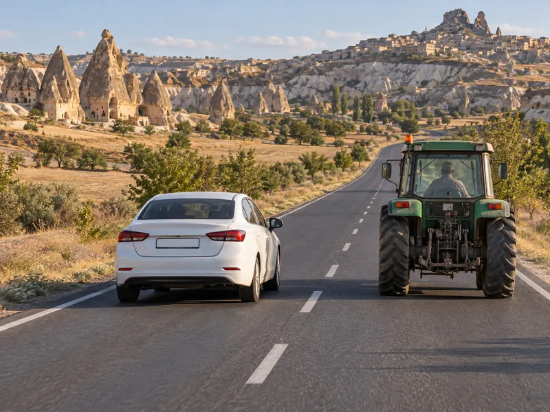

Ayna ayarı ve kör nokta
Sol ve sağ aynayı ayarla; üstte aynaların gerçekte ne gösterdiğini, altta kırmızı taralı kör noktayı izle. Sonra omuz kontrolü yapıp boşken şerit değiştir. Hedef: doğru ayar + 2 güvenli şerit değiştirme.
Trafik ve ÇevreKonu 9 / 1766 çıkmış soruUygulamalı
Şerit izleme ve şerit değiştirme kurallarını, öndeki aracı güvenle geçmenin aşamalarını, geçmenin yasak olduğu yerleri ve geçilen sürücünün yükümlülüklerini; dar ve eğimli yollarda karşılaşmayı ve geri manevrayı kapsar.

Sürücü, gidiş yönüne ayrılmış şeritlerden birinde ve şeridini izleyerek ilerler. Çok şeritli yollarda en soldaki şerit öndeki aracı geçmek ve sola dönmek için kullanılır; sürekli işgal edilemez. Geçişi tamamlayan sürücü sağdaki şeride döner. Sol şeridi sürekli işgal etmek, arkadan gelenlerin geçişini engellediği için trafik akışını bozar. Üç şeritli iki yönlü yollarda ortadaki şerit iki yönün de geçiş şerididir ve sürekli işgal edilemez. Tek yönlü yollara ters yönden girmek yasaktır.
Şeridi sona eren (yolun daraldığı) sürücü, devam eden şeritteki araçlara yol verir ve güvenli bir boşluk bulduğunda şerit değiştirir. Kavşaklara yerleşim yeri içinde 30 metre, yerleşim yeri dışında 150 metre kala şerit değiştirmek yasaktır; şerit seçimi kavşağa gelmeden yapılmalıdır.
Geçişe başlamadan önce sürücü, geçiş yapacağı yolun yeterince açık ve güvenli olduğundan emin olmalıdır. Bunun için karşı yönden gelen aracın hızı ve uzaklığı, geçilecek aracın hızı, geçme yasağı bulunup bulunmadığı ve arkadan kendisini geçmeye başlamış bir araç olup olmadığı değerlendirilir. Geçilecek aracın markası gibi özelliklerin geçiş güvenliğiyle ilgisi yoktur; öndeki sürücünün işaret vermesini beklemek de bir kural değildir.
Güvenli bir geçiş şu sırayla yapılır:
Öndeki araç soldan geçilir; sağından veya banketten yararlanarak geçmek yasaktır. Yol müsait değilse geçişten vazgeçilir. Sola dönmek için işaret verip sola yanaşmış bir araç ise sağdan geçilebilir.
Konvoy hâlinde yavaş giden araçlar, kendilerini geçmek isteyen araçların aralarına güvenle girebileceği kadar mesafe bırakır. Aksi hâlde geçiş yapan araç karşı şeritte sıkışıp kalır.
Aksine bir işaret yoksa eğimsiz iki yönlü dar yolda geçiş kolaylığı şu kurallarla sağlanır:
| Taşıt | Kime yol verir? |
|---|---|
| Motorsuz taşıt | Motorlu taşıta |
| Lastik tekerlekli traktör ve iş makinesi | Diğer motorlu taşıtlara |
| Kamyon ve otobüs gibi büyük taşıtlar | Kamyonet, minibüs ve otomobile |
| Kamyonet ve minibüs | Otomobile |
Kısacası büyük taşıt küçüğe yol verir; yol veren sürücü yolun geniş bir yerinde sağa yanaşır, gerekirse durur.
Eğimli dar yollarda ise inen araç, çıkan araca yol verir; çünkü yokuş çıkan aracın durup yeniden kalkması ve geri gitmesi daha zordur. Çıkan aracın geçişi güçse inen araç varsa sığınma cebine girer, yoksa sağa yanaşıp durur. Çıkan araç için manevra imkânı bulunmadığı açıkça anlaşılırsa ve sığınma cebi de yoksa inen araç geri gider.
Geri gitmek yalnızca park etme, duraklama veya dar yolda geçiş kolaylığı sağlama gibi zorunlu hâllerde, kısa mesafede ve trafiği tehlikeye sokmadan yapılır. Otoyollarda ve bağlantı yollarında geri gitmek yasaktır. Otobüs, kamyon gibi arka görüşü sınırlı büyük araçlarda geri manevra çevre şartları nedeniyle güvenle yapılamıyorsa sürücüyü yönlendirecek bir gözcü bulundurulur.
Okuduğunuz kuralı ekranda uygulayın. Hedefi tamamlayınca uygulama biter; hatasız bitirirseniz 3 yıldız alırsınız.
Sol ve sağ aynayı ayarla; üstte aynaların gerçekte ne gösterdiğini, altta kırmızı taralı kör noktayı izle. Sonra omuz kontrolü yapıp boşken şerit değiştir. Hedef: doğru ayar + 2 güvenli şerit değiştirme.
MEB sınavlarında bu konudan çıkmış 66 soru (3 tanesi en az üç sınavda soruldu). Her soruda doğru cevabı ve açıklamasını hemen görürsünüz.
Hangi sorular?
Sıralama